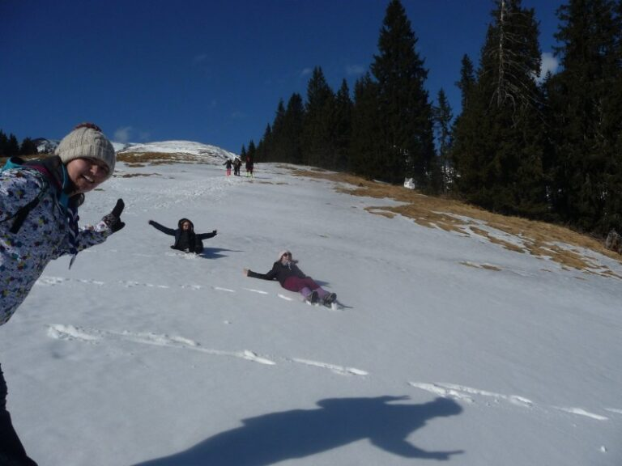

Poveștile iernii: SCOUTocitul din 2016

,,A fost odată ca niciodată,
O şcoală de iarnă………”
Există multe activităţi frumoase şi inedite pe care le poate face cineva în timpul iernii, dar niciuna nu se compară cu ceea ce ar putea face un cercetaş în acest anotimp, spre exemplu o întâlnire cu “bătrânul munte”. Astfel, în dimineaţa zilei de 8 februarie la ora 9:30, grupul nostru de cercetaşi dornici de acţiune au urcat în tren cu destinaţia Câmpulung. Am fost împărţiţi în trei patrule: Urşii, Lupii şi Vulpile. Fiecare patrulă a primit o sarcină pe care şi-a dus-o la îndeplinire, mai mult sau mai puţin.
Ajunşi în oraş am făcut aprovizionarea cu mâncare pentru următoarele patru zile. Am pornit apoi mai departe cu microbuzul aproximativ o oră după care ne-am despărţit de civilizaţie şi am început să urcăm cu propriile puteri, sau de gura celorlalţi, spre destinaţia mult aşteptată.
Mai uşor, mai greu, parcurgem o bună bucată din traseu şi ajungem la o cascadă (aşa cum am botezat-o noi) unde am făcut un popas pentru a ne odihni şi, de ce nu, pentru a face câteva poze artistice lângă apă. Nu după mult timp întrezărim cabana printre crengile argintii ale brazilor şi imediat se aud cuvintele:” ÎN SFÂRŞIT!! 🙂 “. Adevărat, în sfârşit am ajuns la cabana Cuca. În faţa acesteia, am aflat şi numele patrulei liderilor: “Fructe de pădure”, precum şi sarcinile pe care trebuia să la facem la fiecare oră fixă, începând cu ora 9:00 dimineaţa până la ora 12:00 noaptea: un reprezentant al patrulei Urşilor trebuia să cânte cunoscuta melodie ,,Ce mult te-am iubit Paraschivo!”, un reprezentant al lupilor trebuia sa urle precum un lup, iar cineva din patrula vulpilor trebuia să danseze. Şi asta nu era partea amuzantă… interesant era ce se întâmpla dacă nu se îndeplineau cele trei provocări. Foarte simplu: PEDEAPSĂ!! :3 Nu s-au primit multe pedepse, dar nu o să uităm niciodată cât de dificil e să-l convingi pe Petrişor că păsările sunt drăguţe şi că trebuie ocrotite sau faimoasele genoflexiuni cu sticksuri ale lui Adrian.
Prima seară am petrecut-o în atmosfera glumelor şi a discuţiilor despre zilele care vor urma.
A doua zi, după micul dejun, ne-am pregătit pentru hike, atât individual cât şi la nivel de patrulă. Am fost pictaţi pe faţă cu câte un semn reprezentativ patrulei noastre si am pornit. Prima parte de traseu a fost ca un bilet gratuit la săniuş din cauza gheţii, dar acu’ e acu’… Începe urcuşul şi ce poate fi mai frumos decât să o auzi pe Măriuca pe munte, cântând cu însufleţire la fiecare oră fixă, pe Ovidiu urlând (iar de dansat sigur dansa cineva… cred). Din când în când, mai răsuna câte un glas răguşit care întreba: ,,Mai e mult?” Şi obişnuitul răspuns al lui GMK: ,,Cinci minute!”. Traseul nu a fost prea dificil, iar priveliştea şi creasta înzapezită care se zăreau în depărtare printre crengile copacilor ne încurajau să ne continuăm drumul.
Ajunşi la 1600m altitudine, poposim la o stână unde am făcut o pauză bine meritată, în timp ce ne aşteptăm rândul să sunăm acasă de pe singurul telefon care prindea semnal (Mulţumim Cristianei!). Peisajul părea decupat dintr-o poveste, iar dacă priveai mai atent, puteai observa în depărtare şi orașul Câmpulung (bine, aici nu sunt sigură ce oraş era…) strălucind în lumina soarelui. Bineînţeles că am avut parte şi de activităţile specifice iernii: o bătaie artistică cu bulgări (a la Andreea şi Cece) şi un micuţ om de zăpadă (by Dragoş).
Într-un final, după o ultimă fotografie de grup, pornim spre cabană, lăsând în urmă stâna, dar luând cu noi momentele frumoase pe care am avut ocazia să le experimentăm.
Spre seară, am asistat la cursul de prim-ajutor al lui GMK unde am aflat cum trebuie sa procedăm în cazul unei hemoragii, al unei fracturi, paşii care trebuie urmaţi în orice situaţie şi o viziune de ansamblu asupra ideii de prim ajutor. Informaţiile ne vor pregăti să fim “Gata oricând!” să-i ajutăm pe alţii.
A treia zi, deşi am plănuit să vizităm cascadele, vremea nu a ţinut cu noi, aşa că am decis să rămânem în cabană. Cu siguranţă toată lumea s-a întristat la auzul acestei veşti, dar s-au conformat imediat noului program :). A urmat o descriere a metodei SCOUT şi o detaliere a progresului personal condusă de Adrian, iar ca să ne mai dezmorţim puţin, am jucat jocul „Bum Chicka Bum!” care s-a terminat cu lacrimi… dar nu de tristeţe :)) Spre seară, am dezvoltat interesantul atelier cu subiectul ,,Bulling” prin care ne-am dezvăluit unii altora idei, propuneri si rezolvări pentru anumite probleme.
Între timp ploaia s-a transformat în zăpadă şi a venit rândul cabanierului, domnul Romică, să ne povestească din experienţa sa de cabanier, cum înveţi să te descurci singur doar cu muntele alături şi cum lucrurile capătă o mai mare importantă atunci când pui suflet în ceea ce faci. Nu putem uitam nici de amuzanta povestioară a vizitei lui ,,Moş Martin” la cabana acestuia.
Ca în fiecare noapte, Adrian a avut grijă să ne citească o poveste înainte să adormim… şi ca de fiecare dată au fost puţini cei care au rezistat până la final ca să-i audă şi morala.
Aşa a venit şi ultima zi. Toţi cu bagajele pregătite aşteptam ora plecării. În acest timp, Andreea şi Ada au desenat un crin SCOUT în zăpadă în faţa cabanei unde am făcut apoi o poză de grup împreună cu cabanierul. Într-un final, am luat drumul înapoi spre civilizaţie. Ajunşi în tren, am jucat “Werewolves” şi am discutat aşteptând să ajungem din nou acasă.
Chiar dacă ieşirea noastră de iarnă s-a terminat, rămânem cu învăţăturile, momentele frumoase şi amuzante pe care le-am trăit alături de ceilalţi. Am învăţat multe în această şcoală de iarnă. Mult prea multe ca să poată fi cuprinse într-un articol, dar mai presus de toate am învăţat să conştientizăm noţiunea timpului, abilitate ce am deprins-o datorită jocului din oră în oră.
Aşadar, după patru zile, ne-am întors la vieţile noastre obşnuite în oraşul nostru gri pe care-l colorează doar speranţa următoarei ieşiri în natură – pentru unii :).
„Iar legenda spune că la fiecare oră fixă, trei persoane încă
mai cântă, urlă şi dansează! 🙂 ”
de Cecilia-Catalina Teme